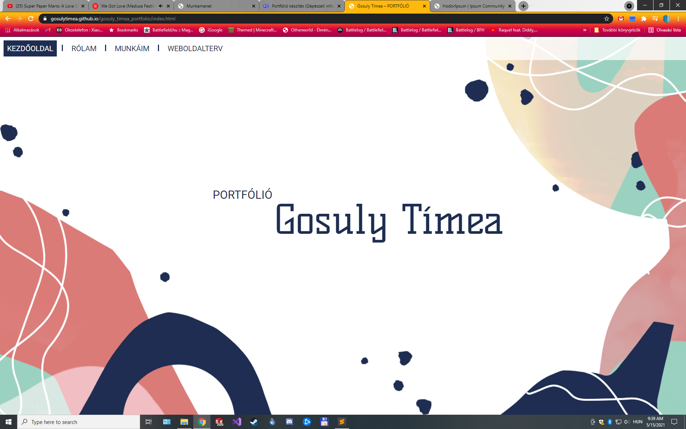
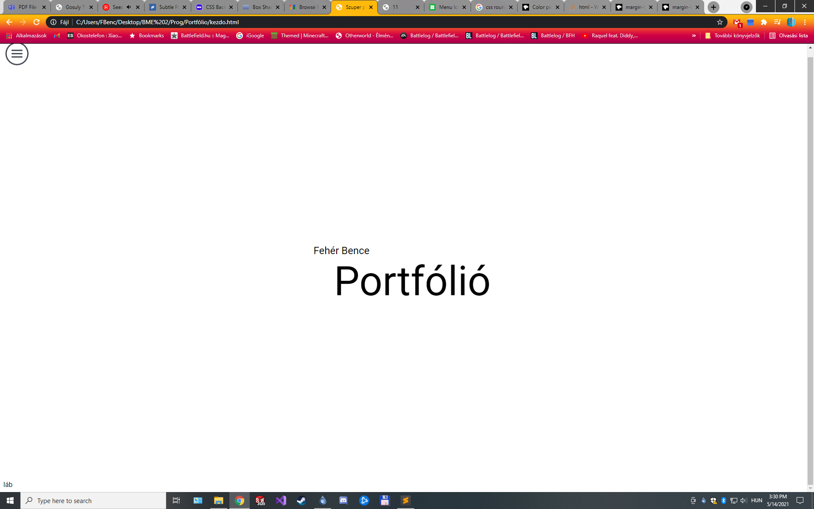
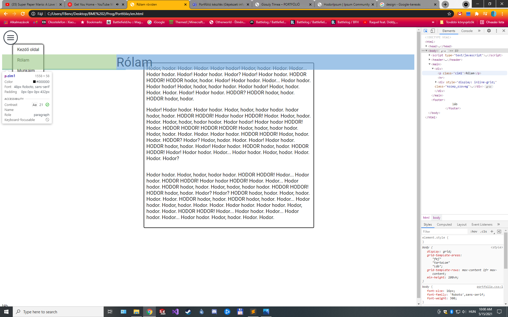

Kezdetek
Őszinte leszek, soha nem voltam nagy kedvelője se a programozásnak se pedig a weblap tervezésnek, és ez a félév megmutatta hogy még nagy zseni se vagyok hozzá, viszont saját meglepetésemre élveztem ezt a projektet.
Kicsit megcsúsztam több szempontból is ebben a félévben és nekem személyszerint nagyon sokat ártott az otthonlét azért pótbeadás előtt 5 nappal kezdtem neki a weblapnak az előadások végignézését is beleértve. Azt gondoltam lehetetlen lesz befejezni mert más dolgozatok is voltak még de könnyebb volt mint gondoltam.
Az alapok megértése és pár elem megírása után gyorsan haladtam, mert sok ahogy látható sok elemet újrahasznosította több helyen és az időm kb. fele a kinézettel ment el, mert bár gépész haééagtó vagyok szeretek tervezni és általában jól kinéző munkákat kiadni.

A design-ban sok ötletet adott amit korábbi években készítettek és én is ilyen minimalista hozzáállásban gondolkodtam, ezért próbáltam valami hasonlót összedobni.

Az alapok összerakásának vége fele egy olyan hibába ütköztem hogy ha padding-gel toltam odébb a szöveget akkor nem lehett a menüben kattintani ahol lefedte a padding és ezt a második oldalon fenn hagytam, mert ott csak saját magára fedett rá, ami nem volt probléma, viszont ezen az odalon a másodikra és harmadikra is ráfedett ami már baj volt, ezért itt margin-nal oldottam meg. Eredetileg transformoltam, de akkor eltolta jobbra az egészet és alul megjelent egy csúszka, ami nem tetszett.

Konklúzió
Összességében élveztem ezt a projektet, jobban is mint gondoltam és ezután lehet vagy magamtól, vagy akár az egyetemen belül is jobban beleásom magam a dologba ha lesz egy kis szabadidőm.
Ami legjobban meglepett az egészben, az az volt hogy nem is maga a kód felépítése volt a sokidő, hanem hogy az ki is nézzen valahogy és kitapasztalni hogy mi működik és mi nem.
Néhány helyen azt éreztem hogy varázsolnom kellett és programozó szemmel biztos nem a legszebb kód, de én úgy érzem a limitált képességeimmel egy viszonylag jól kinéző oldalt sikerült összedobnom.
Nem gondoltam hogy ezt mondom valaha, de kicsit sajnálom hogy nem kezdtem el előbb és nem tudtam még szépíteni.
Használt weboldalak:
http://www.developer.mozilla.org/en-US/docs/Web/CSS/CSS_Colors/Color_picker_tool
https://www.ipsum-community.github.io/hodoripsum/
https://www.w3schools.com/